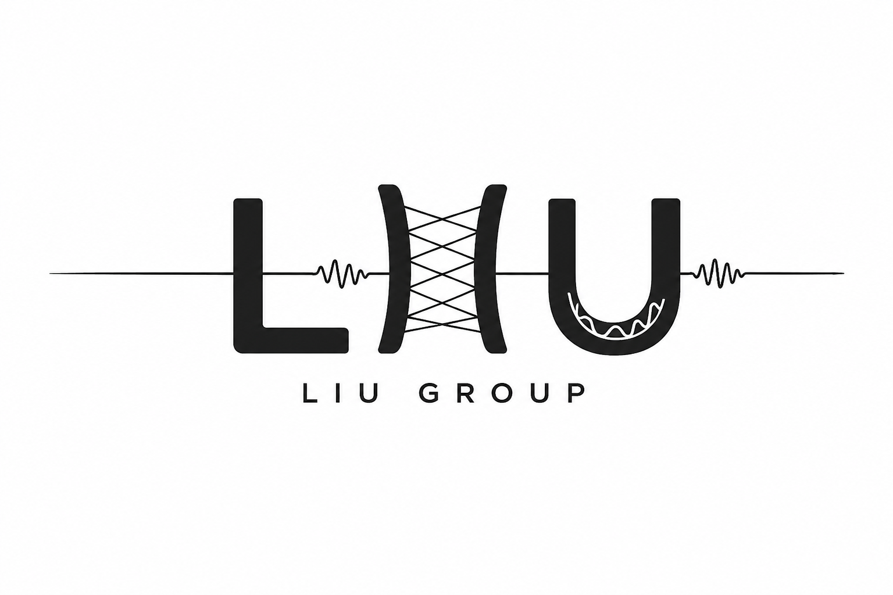

Dr. Tianlin Liu
Assistant Professor
Department of Chemistry & Biochemistry
Texas Tech University
Lubbock, Texas
Get in touch
The Liu Group will join the Department of Chemistry & Biochemistry at Texas Tech University in September 2027.

Assistant Professor
Department of Chemistry & Biochemistry
Texas Tech University
Lubbock, Texas